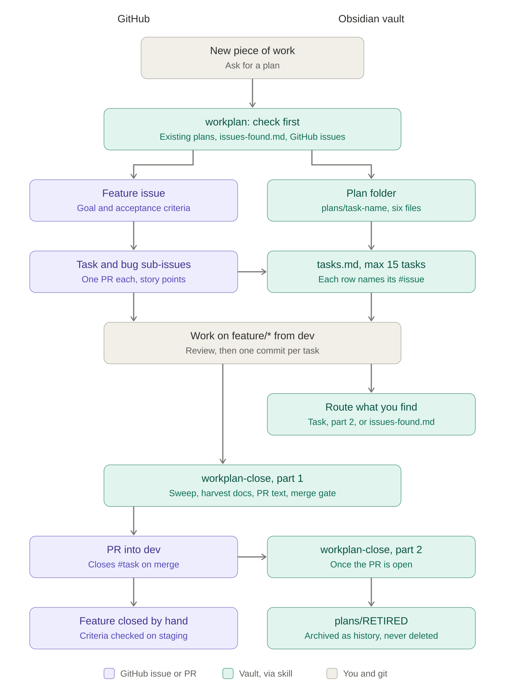

Välkomna. Det här är inte en genomgång av ett verktyg utan av hur jag faktiskt jobbar varje dag – vad som funkar, vad som gått fel och vad jag lärt mig.
Agenda
Tre delar
1
Grunderna
Vad en LLM är, kontext och harness – varför AI:n beter sig som den gör.
2
Mitt arbetsflöde
Planera, jobba, granska, minnas – med Scrum som ram.
3
Underhåll & fallgropar
Städa efter agenterna och håll koll på budget och rate limits.
Kort överblick. Del 1 ger förståelsen, del 2 är det praktiska, del 3 är sakerna jag önskar att någon hade sagt till mig tidigare.
Del 1
Grunderna
Varför beter sig AI:n som den gör?
Vad är en LLM?
En sannolikhetsmaskin
1–5 byter mening · S snurrar
En LLM förutsäger nästa token – inte riktigt ord, snarare ordbitar/stavelser – utifrån allt som kommit innan. Varje token är ett viktat lotteri. Snurra några gånger: samma fråga, olika svar. Det är poängen. Notera att alternativen är tokens, inte ord – i "Jag har aldrig förstått mig på" är alternativen ordbitar – " kat" kan bli katter eller katalog, " poli" kan bli politik eller polisen. Många tokens börjar med ett mellanslag – då är det början på ett nytt ord. Sista exemplet är kod: efter users. väljer den nästa token precis likadant – därför kan den hitta på en metod som inte finns.
Vad är en LLM?
Den är inte deterministisk
Kod · ”vad är 6 × 7?”
Samma input → samma output. Ett test kan bevisa att koden alltid svarar likadant.
LLM · ”vad är 6 × 7?”
Samma input → troligen liknande output. Inget test kan garantera vad den svarar nästa gång.
Därför behöver vi andra verktyg för att styra den: kontext, regler, skills, planering och granskning.
Det här är grunden för resten av workshopen. Allt jag gör handlar om att minska spridningen i hjulet – ge den rätt kontext och tydliga ramar så att det mest sannolika svaret också är det rätta.
Kontext
Allt den vet är det som ligger i kontext
System
Regler
Skills
CLAUDE.md
Filer den läst
Konversationen
ledigt
Laddas alltidDina reglerProjektets kontextDet ni pratat om
Varje chatsession startar från noll och bygger upp kontext
Allt som läses in kostar – tokens, tid och fokus
Max 250 rader per fil – så agenten inte måste läsa in för mycket
Stapeln är en illustration, inte riktiga siffror. DEMO: kör /context i Claude Code i början av en ny session och visa hur mycket som redan är laddat innan du skrivit något. Prata om vad som kostar och vad som bygger på varandra.
Harness
Du bygger nästa nivå av harness
Ditt harness
Skills, rules, settings, CLAUDE.md
Claude Code
Spärrar och regler för hur modellen får agera
LLM:en
Balans:
Tillräckligt med regler för att hålla gränserna
Inte så mycket att du overloadar kontext
Claude Code är ett harness som kör olika Claude-modeller och har massa inbyggda spärrar. Med skills, rules och settings lägger du ett eget lager ovanpå. Ju mer du lägger i, desto mer kontext äter det – så det är en balansgång.
Del 2
Mitt arbetsflöde
Scrum fast med en AI i teamet
Två världar
Jobbet och hemma ser olika ut
På jobbet
Info från kund, teamlead, backend, design, firmware och min Android-kollega. Jag äger inte koden.
Begränsat: vad får AI:n se och göra? Säkerhet och vad jag får dela.
Hemma
Mina egna projekt. Jag bestämmer allt och kan låta agenterna göra mer.
Friare: egna skills, inbox, sweep inför release.
Viktigt för juniora utvecklare: på jobbet är det inte ditt att bestämma vad AI:n får läsa. Kolla alltid vad som gäller hos kunden innan du klistrar in kod eller dokumentation.
Ramen
Scrum-ceremonierna funkar för AI-arbete också
Planning
Planera vad som ska göras och vilken kontext AI:n behöver.
Jobba
En task i taget, en commit per task.
Review
Stämmer allt vi kom överens om? Är DoD uppfyllt?
Retro
Det AI:n lär sig måste sparas någonstans – annars gör nästa session samma misstag.
Jag följer inte Scrum slaviskt, men ceremonierna mappar väldigt bra. Resten av del 2 går igenom dem en i taget.
Planning
Planering är A och O
Samla allt– läs dokumentationen, vilka behöver jag prata med?
Kolla historiken– har jag redan loggat issues om det här?
Låt AI:n planera– /plan, /grill – låt den ställa frågor
Max 15 tasks– blir det fler delas arbetet i två delar
Exempel: jag ska skicka events till en molnlösning för statistik. Jag läser på, kollar vad firmware och analytics behöver, vad kunden vill logga, kollar befintliga issues – och först då ber jag AI:n lägga upp en workplan. Mina första försök hade upp till 30 tasks, det blev ohanterligt.
Workplan
En workplan = fem filer
Tasks
Tabell: uppgift, klar?, vilken commit.
Task details
Alla detaljer, länkade från tasks.
Findings
Buggar, saker som inte funkade som vi trodde.
Decisions
Beslut som påverkar projektet – och kanske teamet.
Questions
Det jag behöver stämma av med någon – loggat, gjort eller inte.
Varför filer? Jag kan gå igenom, stryka småsaker och svara själv – istället för att leta i en enorm memory-fil.
Tasks och details är separerade för att listan annars blev för plottrig. En del av det AI:n hittar är onödigt – frågor jag redan vet svaret på. Då går jag in och stryker. TIPS: Obsidian läser md-filer snyggt och visar SVG:er – be AI:n göra en SVG-översikt av projektet.
Hela flödet

Workplan + GitHub issues
Feature issue = parent, med mål och acceptanskriterier
Task- och bug-issues som sub-issues – vad hör ihop?
Varje rad i tasks.md pekar på sitt #issue
Jag sköter issues själv för historik och loggning
Gjord av AI:n, visas i Obsidian
Mitt team har ingen gemensam board som gås igenom varje dag, så prioriteringen ligger på mig. Därför sköter jag GitHub issues själv – parent issues för features, sub-issues för tasks och buggar. Bilden är ett exempel på en SVG-översikt AI:n gjort åt mig.
Alla tasks klara? Findings, decisions och frågor flyttas till sina hem.
3
RETIRED
Workplanen arkiveras. Historiken finns kvar – utan att leta i 28 chattar.
Jag kollar alltid mot koden att alla tasks verkligen gått igenom. Findings och decisions blir antingen en uppdaterad skill, en rule eller dokumentation.
Review
Separata review-agenter
Fokus
Agent
Modell
Arkitektur + kontrakt mellan repon
review-architecture
opus
Korrekthet
review-code
opus
Tester
review-tests
sonnet
Konventioner, best practice
review-conventions
sonnet
Domänfakta
review-domain
sonnet
Backend-säkerhet
general-purpose
sonnet
Tyngre modell där det kräver omdöme, lättare där det räcker med att följa regler.
Varje agent har ett smalt fokus och sin egen kontext, så den inte drunknar. Opus där det kräver resonemang, Sonnet där det mest handlar om att kontrollera mot regler – det sparar också budget.
Retro
AI:ns minne måste ligga någonstans
AI:n hittar buggar, issues – och har egna problem: scripts som failar, LF istället för CRLF…
På jobbet
Findings, Decisions, Issues och Logs som AI-minne.
Hemma
En inbox med allt den hittar + en inbox-sweep-skill som går igenom allt inför varje release.
Målet: det hamnar i en rule, dokumentation, skill eller projektets kontext – så nästa session slipper upprepa det.
Superviktigt. Utan det här gör varje ny session samma misstag igen.
Del 3
Underhåll & fallgropar
Det ingen säger till dig i början
Underhåll
Varje ny session är en ny teammate
En agent ”freebasar” och skapar en history-logg i rules. Hur hittar du det? När hittar du det?
Gå igenom varje commit och PR noggrant
Max 250 rader per fil – en history-fil växer snabbt förbi det
Kolla skills och rules med jämna mellanrum – onödig text?
Målet är att få alla sessioner att följa reglerna du satt upp för projektet. Men de gör egna saker ibland, och det som hamnar i rules laddas in i varje session framöver.
Budget & rate limits
Agenter är supereffektiva – även på att bränna kvoter
GitHub Actions
Privata konton har 2 000 minuter per månad. Det går åt på en helg med effektivt AI-arbete om du inte begränsar vad som körs.
GitHub rate limit
Agenterna körde gh project item-list – hela boarden vid varje anrop. Lösningen: filtrera på milestone och status.
Se över gränserna innan du slår i dem.
Gratisgränser på Google, GitHub osv är satta för människor. Agentens egen lösning var att hämta varje issue med id – men den visste inte vilka id:n den behövde. Jag fick föreslå filtret. Ett bra exempel på att du fortfarande behöver förstå vad den gör.
Sammanfattning
Att ta med sig
Den gissar – väl
Styr den med kontext, regler och planering.
Planera först
Max 15 tasks. Samla kontext innan du ber om en plan.
Allt i filer
Findings, decisions, questions – läsbara och strykbara.
Granska och städa
Review-agenter, retro, och koll på vad som hamnar i rules.